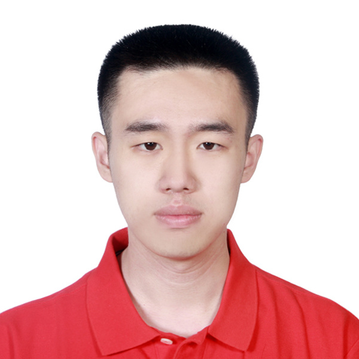
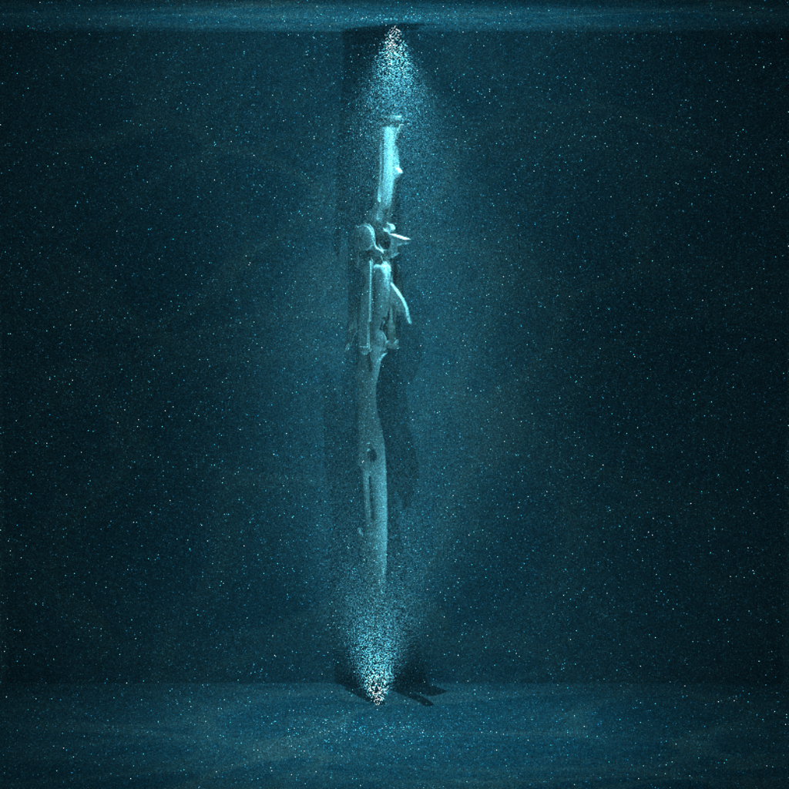
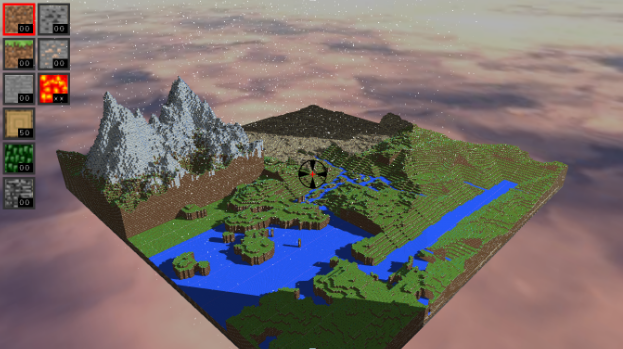
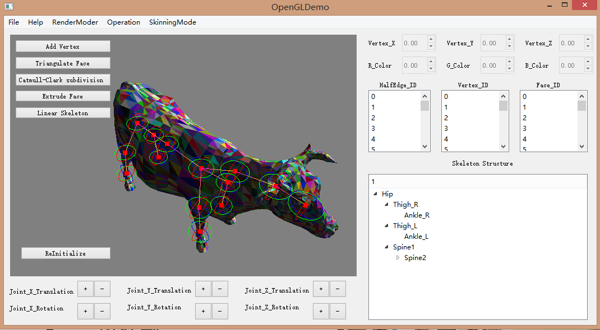
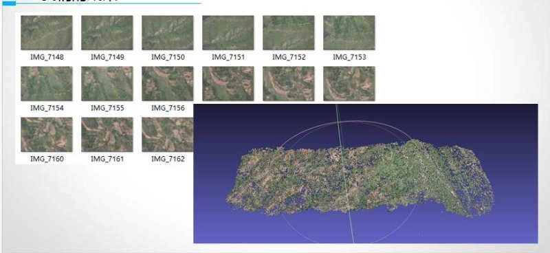

Welcome to My Workhouse
I am currently a master student in the Computer and Information Science Department of University of Pennsylvania., major in Computer Graphics and Game Technology(CGGT).
I am a big fan of Computer Science, especially the Computer Graphics and Computer Vision. This is the space where I share my portfolio. I hope you can learn more about me here.
About me
|  | Yi GuoComputer Graphics and Game Technology(CGGT) E-mail: guoyi1@seas.upenn.edu |
Projects
|  | Advanced Rendering
|
|  | Miniminecraft This is a group project implemented by Kaixiang Miu, Jiawei Wang and me.The program is implemented on the platform of QT creator. In this minecraft game, the main features include:Perlin Noise topography,Weather billboard,River system,texture, normal map, shadow map, Collision Detection, Fetch and place operation, Player GUI,etc. |
|  | Mesh Editor tool This Mesh Editor tool is implemented with C++ and OpenGL on the platform of QT Creator. Main features include: scene graph tree structure, half edge mesh data structure, Catmull Clark subdivision, skinning and skeletion
|
|  | Fast 3D Reconstruction of Aerial Pictures Based on GPU Parallel Computing
|
Contact me
If you have any questions about my projects, feel free to contact me. My e-mail address is guoyi1@seas.upenn.edu
Last Update: May 31st,2017